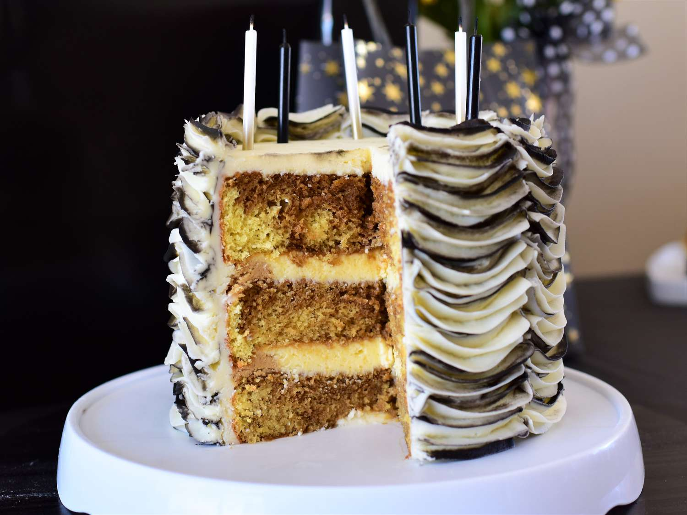

Tiramisu Recipe

Description
Tiramisu is a classic Italian dessert made with layers of coffee-soaked ladyfingers, mascarpone cheese, and a dusting of cocoa powder. To make it, dip the ladyfingers in a mixture of espresso and a bit of rum, then layer them with a rich, velvety blend of mascarpone, eggs, and sugar. After assembling, let it chill in the fridge for a few hours to allow the flavors to meld together. The result is a creamy, indulgent treat that's perfect for any occasion!
Ingredients
Cake
- 15.25 ounce moist white cake mix
- 1 cup water
- 3 large egg whites
- 1/3 cup vegetable oil
- 1 tsp instant coffee powder
Coffee syrup
- 1/4 cup coffee
- 1 tbsp coffee flavoured liquor
Filling
- 8 ounce container mascarpone cheese
- 1/2 cup confectioners' sugar
- 2 tbsp coffee flavoured liquor
Frosting
- 2 cup heavy cream
- 1/4 confectioners' sugar
- 2 tbsp coffee flavoured liquor
Garnish
- 2 tbsp unsweetened cocoa powder
- 1 ounce square semisweet chocolate
Steps
- Gather the ingredients. Preheat the oven to 350 degrees F (175 degrees C). Grease and flour three 9-inch pans
- To make the cake: Beat cake mix, water, egg whites, and oil in a large bowl with an electric mixer on medium speed until well combined, about 2 minutes. Divide 2/3 of the batter between 2 prepared pans. Stir instant coffee into remaining batter; pour into the remaining prepared pan
- Bake in the preheated oven until a toothpick inserted into the center of cakes comes out clean, 23 to 28 minutes. Cool cakes in the pans for 10 minutes, then turn out onto a wire rack to cool completely
- To make the syrup: Combine brewed coffee and coffee liqueur in a measuring cup; set aside
- To make the filling: Beat mascarpone, confectioners' sugar, and coffee liqueur in a medium bowl with an electric mixer on low speed until smooth. Cover with plastic wrap and place in the refrigerator to keep cool
- To make the frosting: Beat cream, confectioners' sugar, and coffee liqueur in a medium bowl with an electric mixer on medium-high speed until stiff. Fold 1/2 cup frosting into chilled filling until combined. Store frosting and filling, covered, in the refrigerator to keep cool
- To assemble the cake: Place 1 plain cake layer on a serving plate. Using a thin skewer, poke holes in cake, about 1 inch apart. Pour 1/3 of the coffee syrup over cake, then cover with 1/2 of the filling. Top with coffee-flavored cake layer; poke holes in cake. Pour another 1/3 of the coffee syrup over cake and cover with remaining filling. Top with remaining cake layer; poke holes in cake. Pour remaining coffee syrup on top. Spread sides and top of cake with frosting
- To garnish the cake: Place cocoa powder in a sieve and lightly dust top of cake. Run a vegetable peeler down the edge of chocolate square to form curls. Scatter chocolate curls over cake
- Chill cake in the refrigerator for at least 30 minutes before serving
Home